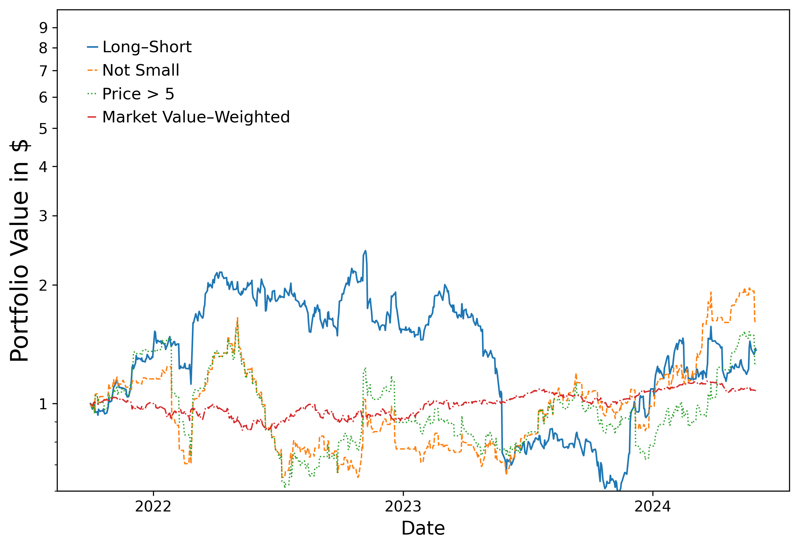
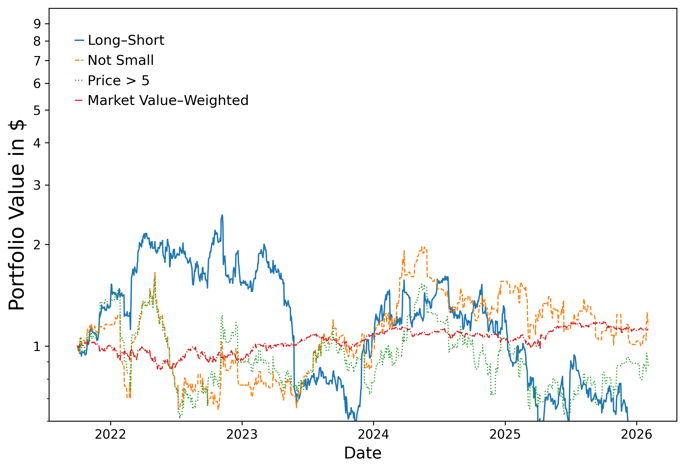

Replication Results#
This notebook presents the core replication outputs: Table 1 (trading performance statistics) and Figure 5 (cumulative portfolio returns). Results are compared against the original paper’s findings.
Differences from the Original Study#
While the replication pipeline closely follows the paper, several important differences arise:
Headline source – The original study uses RavenPack headline text directly. This replication instead uses independently scraped headlines (from PR Newswire and GDELT) that are fuzzy-matched against RavenPack to obtain entity metadata (tickers, relevance scores, deduplication keys). The scraped headlines can be sent to OpenAI without violating RavenPack’s data licensing restrictions. Coverage differences may result in a different headline count.
Overnight only – The replication focuses on the overnight component of the strategy and does not attempt to reproduce the intraday results.
Model deprecation – The exact GPT-4 model used in the paper (
gpt-4-0314) has been deprecated. To avoid look-ahead bias, the replication uses GPT-3.5-Turbo, whose training data end prior to the sample period. This model appears to classify headlines more conservatively, producing a much larger share of UNKNOWN labels (~67% vs ~35%).Smaller portfolios – Fewer headlines and more neutral classifications mean fewer firms appear in the daily portfolios.
Setup#
from pathlib import Path
import pandas as pd
from IPython.display import Markdown, display
from settings import config
DATA_DIR = Path(config("DATA_DIR"))
OUTPUT_DIR = Path(config("OUTPUT_DIR"))
MANUAL_DATA_DIR = Path(config("MANUAL_DATA_DIR"))
Table 1: Original Paper Results#
The table below reproduces Table 1 from the original paper (Lopez-Lira and Tang, 2023). Only the overnight columns are shown, as the replication focuses on overnight signals.
Initial Reaction |
Sharpe |
||
|---|---|---|---|
Portfolio |
Hit Rate (%) |
Mean Return (%) |
Ratio |
Long-Short |
93.28 |
3.06 |
2.97 |
Long-Only |
83.28 |
1.27 |
0.78 |
Short-Only |
79.40 |
1.79 |
2.01 |
Firm-Day Obs. |
105,742 |
||
Trading Days |
670 |
Table 1: Replication (Paper Sample, Oct 2021 – May 2024)#
paper_sample_path = OUTPUT_DIR / "table1_overnight_paper_sample.csv"
paper_summary_path = OUTPUT_DIR / "table1_summary_paper_sample.csv"
if paper_sample_path.exists():
paper_sample = pd.read_csv(paper_sample_path)
display(Markdown("### Replication -- Paper Sample Period"))
display(paper_sample)
if paper_summary_path.exists():
paper_summary = pd.read_csv(paper_summary_path).iloc[0]
display(
Markdown(
f"**Trading Days:** {paper_summary['Trading Days']:,.0f} | "
f"**Firm-Day Observations:** {paper_summary['Firm-Day Observations']:,.0f}"
)
)
Replication – Paper Sample Period
| Portfolio | Initial Reaction Hit Rate (%) | Initial Reaction Mean Return (%) | Drift Hit Rate (%) | Drift Mean Return (%) | Drift Sharpe Ratio | |
|---|---|---|---|---|---|---|
| 0 | Long-Short Portfolio | 76.162 | 3.609 | 48.876 | 0.064 | 0.209 |
| 1 | Long-Only Portfolio | 71.642 | 1.779 | 46.269 | 0.036 | 0.214 |
| 2 | Short-Only Portfolio | 70.309 | 4.838 | 50.103 | 0.008 | 0.020 |
Trading Days: 670 | Firm-Day Observations: 35,113
The replication broadly reproduces the qualitative pattern from the paper. The long-short portfolio generates positive drift returns and an economically meaningful Sharpe ratio. However, the magnitude is lower than in the original study, consistent with the smaller portfolio sizes and higher share of neutral classifications.
Table 1: Replication (Full Sample, through 2026)#
full_sample_path = OUTPUT_DIR / "table1_overnight_full_sample.csv"
full_summary_path = OUTPUT_DIR / "table1_summary_full_sample.csv"
if full_sample_path.exists():
full_sample = pd.read_csv(full_sample_path)
display(Markdown("### Replication -- Full Sample"))
display(full_sample)
if full_summary_path.exists():
full_summary = pd.read_csv(full_summary_path).iloc[0]
display(
Markdown(
f"**Trading Days:** {full_summary['Trading Days']:,.0f} | "
f"**Firm-Day Observations:** {full_summary['Firm-Day Observations']:,.0f}"
)
)
Replication – Full Sample
| Portfolio | Initial Reaction Hit Rate (%) | Initial Reaction Mean Return (%) | Drift Hit Rate (%) | Drift Mean Return (%) | Drift Sharpe Ratio | |
|---|---|---|---|---|---|---|
| 0 | Long-Short Portfolio | 77.087 | 5.175 | 49.072 | -0.059 | -0.196 |
| 1 | Long-Only Portfolio | 72.442 | 3.294 | 46.452 | -0.037 | -0.192 |
| 2 | Short-Only Portfolio | 70.867 | 5.280 | 51.897 | 0.162 | 0.392 |
Trading Days: 1,088 | Firm-Day Observations: 53,880
Hit ratios for the long-short, long, and short portfolios remain high and comparable to the original paper. Sharpe ratios decrease both relative to the paper and relative to the paper-window replication, reflecting a trend observed in the paper that strategy returns decline over time following the introduction of LLM models (see Table OA2 in the original paper).
Replication Comparison#
Below we compute the difference and percentage error between our paper-sample replication and the original paper’s Table 1.
actual_path = MANUAL_DATA_DIR / "paper_table1.csv"
actual_summary_path = MANUAL_DATA_DIR / "paper_table1_summary.csv"
if paper_sample_path.exists() and actual_path.exists():
actual = pd.read_csv(actual_path)
paper_sample = pd.read_csv(paper_sample_path)
compare_cols = [c for c in paper_sample.columns if c in actual.columns]
numeric_cols = [c for c in compare_cols if c != "Portfolio"]
actual_cmp = actual[compare_cols].set_index("Portfolio")
paper_cmp = paper_sample[compare_cols].set_index("Portfolio")
diff = paper_cmp[numeric_cols].apply(pd.to_numeric, errors="coerce") - actual_cmp[
numeric_cols
].apply(pd.to_numeric, errors="coerce")
display(Markdown("### Absolute Difference (Replication - Paper)"))
display(diff.reset_index().style.format({c: "{:.4f}" for c in numeric_cols}))
pct_error = pd.DataFrame(index=actual_cmp.index)
for col in numeric_cols:
a = pd.to_numeric(actual_cmp[col], errors="coerce")
r = pd.to_numeric(paper_cmp[col], errors="coerce")
pct_error[f"{col} (%)"] = ((r - a) / a.replace(0, pd.NA)) * 100
display(Markdown("### Percentage Error"))
error_cols = pct_error.columns.tolist()
display(
pct_error.reset_index().style.format({c: "{:.2f}%" for c in error_cols})
)
if paper_summary_path.exists() and actual_summary_path.exists():
paper_sum = pd.read_csv(paper_summary_path).iloc[0]
actual_sum = pd.read_csv(actual_summary_path).iloc[0]
display(
Markdown(
f"**Sample comparison** -- "
f"Trading Days: {paper_sum['Trading Days']:,.0f} "
f"(paper: {actual_sum['Trading Days']:,.0f}) | "
f"Firm-Day Obs: {paper_sum['Firm-Day Observations']:,.0f} "
f"(paper: {actual_sum['Firm-Day Observations']:,.0f})"
)
)
Absolute Difference (Replication - Paper)
| Portfolio | Initial Reaction Hit Rate (%) | Initial Reaction Mean Return (%) | Drift Hit Rate (%) | Drift Mean Return (%) | Drift Sharpe Ratio | |
|---|---|---|---|---|---|---|
| 0 | Long-Short Portfolio | -17.1180 | 0.5490 | -9.1840 | -0.2760 | -2.7610 |
| 1 | Long-Only Portfolio | -11.6380 | 0.5090 | -4.6310 | -0.0440 | -0.5660 |
| 2 | Short-Only Portfolio | -9.0910 | 3.0480 | -3.4770 | -0.2520 | -1.9900 |
Percentage Error
| Portfolio | Initial Reaction Hit Rate (%) (%) | Initial Reaction Mean Return (%) (%) | Drift Hit Rate (%) (%) | Drift Mean Return (%) (%) | Drift Sharpe Ratio (%) | |
|---|---|---|---|---|---|---|
| 0 | Long-Short Portfolio | -18.35% | 17.94% | -15.82% | -81.18% | -92.96% |
| 1 | Long-Only Portfolio | -13.97% | 40.08% | -9.10% | -55.00% | -72.56% |
| 2 | Short-Only Portfolio | -11.45% | 170.28% | -6.49% | -96.92% | -99.00% |
Sample comparison – Trading Days: 670 (paper: 670) | Firm-Day Obs: 35,113 (paper: 105,742)
The largest discrepancies appear in the drift and Sharpe ratio columns. This can almost certainly be attributed to the use of GPT-3.5-Turbo instead of GPT-4. The older model produces significantly more UNKNOWN responses (~67% vs ~35%), which reduces the number of actionable signals and weakens the strategy’s performance.
Figure 5: Cumulative Returns (Paper Sample)#
import create_figure5 as cf5
port_path = DATA_DIR / "portfolio_daily_returns.parquet"
if port_path.exists():
df = pd.read_parquet(port_path)
# Paper sample window
df_paper = df.copy()
df_paper["date"] = pd.to_datetime(df_paper["date"], errors="coerce")
df_paper = df_paper[
(df_paper["date"] >= cf5.PAPER_START) & (df_paper["date"] <= cf5.PAPER_END)
]
paper_series = cf5.prepare_series(df_paper)
cf5.make_plot(paper_series, OUTPUT_DIR / "figure5_paper_sample.png")
from IPython.display import Image
display(Markdown("### Figure 5 -- Paper Sample"))
display(Image(filename=str(OUTPUT_DIR / "figure5_paper_sample.png"), width=700))
Figure 5 – Paper Sample
{kind=link}

The cumulative return profile remains positive over the sample period. Although the growth rate is lower than the original paper, the general pattern of sustained positive returns is preserved.
The Not-Small and Price > 5 variants fluctuate more than in the original figure, likely due to the decreased number of stocks in the portfolios from the higher rate of UNKNOWN classifications.
Figure 5: Cumulative Returns (Full Sample)#
if port_path.exists():
full_series = cf5.prepare_series(df)
cf5.make_plot(full_series, OUTPUT_DIR / "figure5_full_sample.png")
display(Markdown("### Figure 5 -- Full Sample"))
display(Image(filename=str(OUTPUT_DIR / "figure5_full_sample.png"), width=700))
Figure 5 – Full Sample
{kind=link}

Returns appear less stable in 2025-2026 than in previous years, consistent with the declining Sharpe ratios observed in the full- sample Table 1 results.
Conclusion#
The replication successfully reproduces the central empirical finding of the original paper: language-model interpretations of financial news headlines contain predictive information about stock returns. The long-short strategy based on these signals continues to generate positive drift returns and economically meaningful Sharpe ratios.
At the same time, the replication reveals differences in magnitude. Portfolio sizes are smaller, cumulative returns grow more slowly, and the model assigns a much larger fraction of headlines to UNKNOWN. These differences arise primarily from the use of GPT-3.5-Turbo (vs GPT-4) and from the use of independently scraped headlines (rather than RavenPack’s headline text) as the input to the model.
Despite these differences, the replication confirms that large language models can extract useful financial signals from news headlines and translate them into profitable trading strategies.